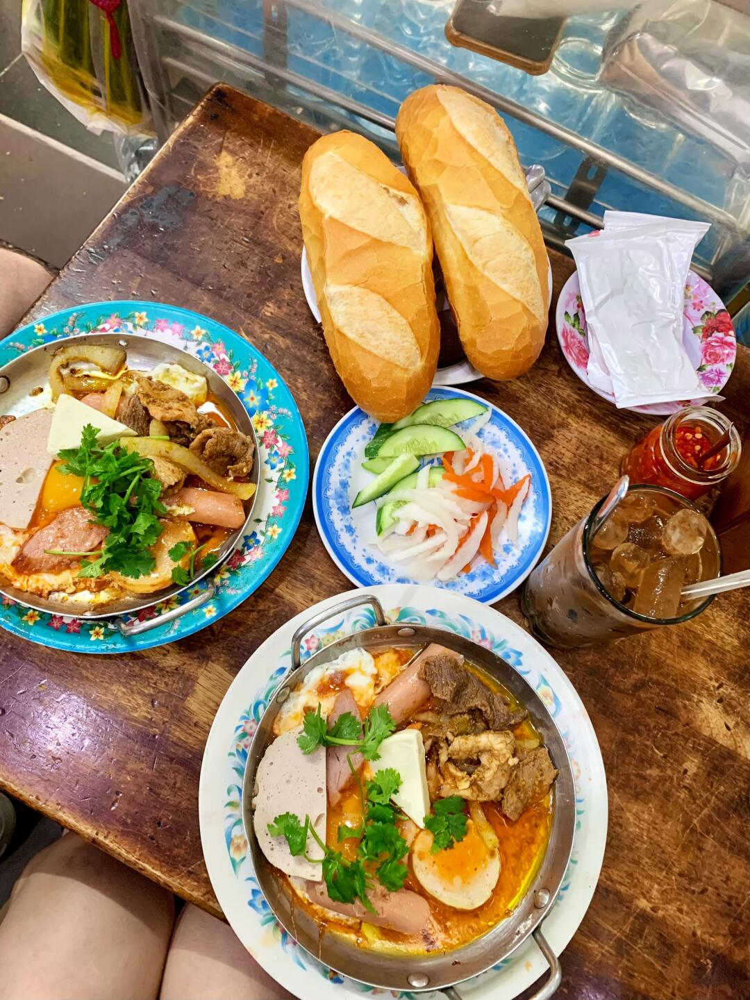
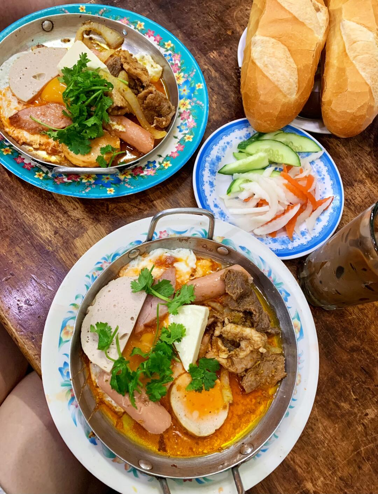
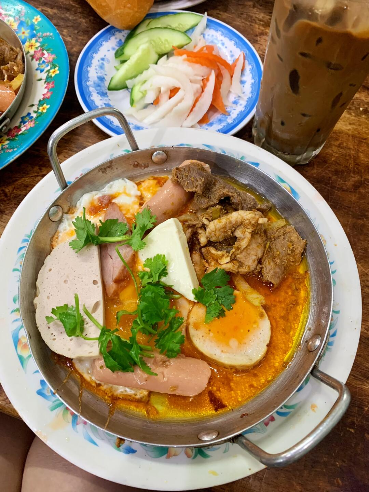
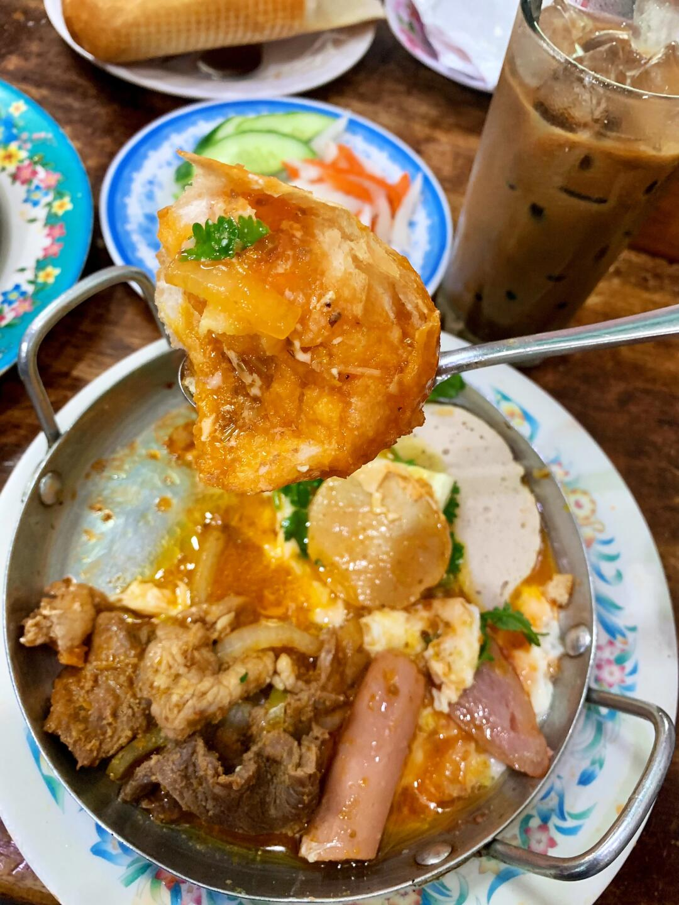

路邊小店 · 越式早餐
Bánh Mì Chảo – Bếp Nhà Thơm
越式鐵板麵包 · Day 1 抵達後的第一餐

地址872/55B Quang Trung, Thông Tây Hội（與飯店同一區）
週一–五07:00–13:00 · 16:00–18:30
週六07:00–13:00
週日06:00–13:00
評分5.0 / 5（54 則）
電話0938 812 412
⏰ 抵達日要留意：Day 1 是 10/26（週一），這天只營業到 13:00。
若班機或入境延誤，可能趕不上——下午 16:00–18:30 還有第二段營業時段，可以改到傍晚吃。
🍳 Bánh Mì Chảo 是什麼
- 越式「鐵板麵包」：鐵板現煎上桌，配法國麵包（Bánh Mì）沾著醬汁吃
- 鐵板上通常有：肉腸、火腿、蛋、奶酪，醬汁是靈魂
- 吃法：撒點胡椒粉、拌開溏心蛋和奶酪、再拿 Bánh Mì 沾醬
- 價格親民（約 16 人民幣／份），在地人早餐選擇
📝 實測心得
- 開在小巷裡的小店，由幾位中年大媽大叔經營，很家常
- 去的時候差不多滿座——本地人氣店，不是觀光客店
- 本來對「澱粉腸、澱粉火腿」不太期待，但吃起來真的很香
- 醬汁調得很好，還有一大塊奶酪
- 「不知不覺光盤了」——適合「不知道早餐吃什麼」的時候
📸 實拍




📌 照片說明：實拍照片引用自小紅書帖文（該帖原文店家為同類型的「Bánh mì chảo Dì Nữ」），
僅作 Bánh Mì Chảo 這類型早餐的參考。Bếp Nhà Thơm 本身未找到帖文，
實際裝潢與擺盤可能不同；地址、電話與營業時間為 Bếp Nhà Thơm 的資料。